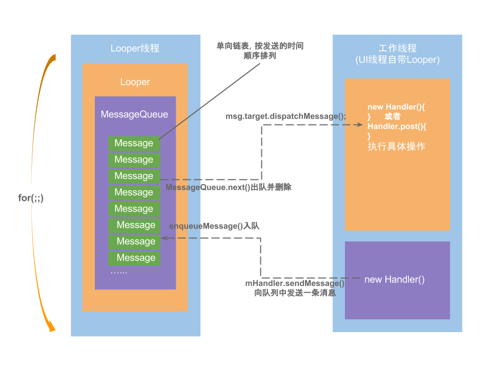
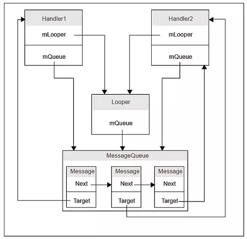

Handler 是 Android 开发过程中非常非常常见的东西。它通常被我们用来做主线程与子线程之间的通信工具，而 Handler 作为 Android 中消息机制的重要一员也确实给我们的开发带来了极大的便利。
重识Handler
我们可以使用 Handler 发送并处理与一个线程关联的 Message 和 Runnable 。（注意：Runnable 会被封装进一个 Message，所以它本质上还是一个 Message ）
每个 Handler 都会跟一个线程绑定，并与该线程的 MessageQueue 关联在一起，从而实现消息的管理以及线程间通信。
1 | android.os.Handler handler = new Handler(){ |
实例化一个 Handler 重写 handleMessage 方法 ，然后在需要的时候调用它的 send 以及 post 系列方法就可以了，非常简单易用，并且支持延时消息。
一些常用的方法如下
1 | sendMessage(Message msg) |
Looper、Handler、MessageQueue与Message的关系与相关概念
Android消息处理机制
什么是Android消息处理机制？
“消息”是windows运行机制中一个基本而又重要的概念。消息是一个报告事件发生的通知，消息驱动是围绕消息的产生与处理展开的，并依靠消息循环机制来实现（百度百科）。与Windows系统一样，Android也是消息驱动型的系统。引用一下消息驱动机制的四要素：
接收消息的“消息队列”
阻塞式地从消息队列中接收消息并进行处理的“线程”
可发送的“消息的格式”
“消息发送函数”
与之对应，Android系统中对应实现了：
- 接收消息的“消息队列” —— MessageQueue
- 阻塞式地从消息队列中接收消息并进行处理的“线程” —— Thread+Looper
- 可发送的“消息的格式” —— Message
- “消息发送函数”—— Handler的post()和sendMessage()
Android有大量的消息驱动方式来进行交互，比如Android的四大组件——Activity, Service, Broadcast, ContentProvider的启动过程的交互，都离不开消息机制。
Handler
Handler是Android消息机制的上层接口。Handler并不是专门用来更新UI的，只是开发者常常用它来更新UI。Handler的主要用于同一个进程间的线程通信，Handler用于更新UI的时候是“子线程与主线程通信”；当然，Handler也可以用于子线程之间通信。
Handler的消息机制主要是就指“Handler的运行机制”，Handler的运行机制时需要底层的MessageQueue和Looper支持的。
MessageQueue
MessageQueue翻译过来是”消息队列”的意思，实际上它内部的数据结构不是队列，而是单向链表；MessageQueue中储存了大量的消息，由于一个线程同一时间只能处理一条消息，所以我们建了一个链表，将我们需要处理的消息按顺序储存起来，然后一项一项的交给需要的线程处理，这就是MessageQueue存在的价值。
Looper
Looper和MessageQueue的消息就像水泵和井(里边装的是水)的关系一样，我们有了消息(水)，但是为了把水从井中抽取出来(循环起来)，我们得有一个水泵作为动力，这个动力就是Looper。
如果我们在一个线程中调用Looper.prepare()...Looper.loop()，那么你的线程就成功升级为了一个Looper线程，这意味着你的线程有了一个消息泵(Looper)和一个消息队列(MessageQueue),此时你就可以调用Handler来进行线程间的通信了。
我们应用的UI线程也就是主线程，在应用启动的时候，系统会自动初始化一个Looper，也就是说，我们的UI线程默认是Looper线程。这也就是为什么主线程中直接调用Handler没什么事，但是再子线程中创建Handler需要手动调用Looper.prepare()...Looper.loop()的和原因。
Message
Message也就是消息，井中的水。一个Message包括了消息类型(what),消息内容(arg1,arg2),发送它的Handler(target),Runnable回调接口等：
1 | public int what; //数据类型 |
小结
Handler 的背后有着 Looper 以及 MessageQueue 的协助，三者通力合作，分工明确。
- Message：消息分为硬件产生的消息(如按钮、触摸)和软件生成的消息；
- MessageQueue：消息队列的主要功能向消息池投递消息(
MessageQueue.enqueueMessage)和取走消息池的消息(MessageQueue.next)； - Handler：消息辅助类，主要功能向消息池发送各种消息事件(
Handler.sendMessage)和处理相应消息事件(Handler.handleMessage)； - Looper：不断循环执行(
Looper.loop)，按分发机制将消息分发给目标处理者。
一张图来了解一下它们之间的关系：

Handler原理解析（Java层）
来分析原理前，先明确一下问题：
- Handler 是如何与线程关联的？
- Handler 发出去的消息是谁管理的？
- 消息又是怎么回到 handleMessage() 方法的？
- 线程的切换是怎么回事？
带着问题去寻找答案。
Handler与Looper的关联
实例化 Handler 的时候 Handler 会去检查当前线程的 Looper 是否存在，如果不存在则会报异常，也就是说在创建 Handler 之前一定需要先创建 Looper 。
1 | public Handler(@Nullable Callback callback, boolean async) { |
这个异常可能有的不熟悉，因为平时直接使用感受不到这个异常是因为主线程已经为我们创建好了 Looper
一个完整的 Handler 使用例子其实是这样的：
1 | class LooperThread extends Thread { |
Looper.prepare()
对于无参的情况，默认调用prepare(true)，表示的是这个Looper允许退出，而对于false的情况则表示当前Looper不允许退出。
1 | public static void prepare() { |
这里的sThreadLocal是ThreadLocal类型，下面，先说说ThreadLocal。
ThreadLocal： 线程本地存储区（Thread Local Storage，简称为TLS），每个线程都有自己的私有的本地存储区域，不同线程之间彼此不能访问对方的TLS区域。
Looper类中其定义如下：
1 | static final ThreadLocal<Looper> sThreadLocal = new ThreadLocal<Looper>(); |
可见sThreadLocal的get()和set()操作的类型都是Looper类型。
另外，与prepare()相近功能的，还有一个
prepareMainLooper()方法，该方法主要在ActivityThread类中使用。
Looper 提供了 Looper.prepare() 方法来创建 Looper ，并且会借助 ThreadLocal 来实现与当前线程的绑定功能。Looper.loop() 则会开始不断尝试从 MessageQueue 中获取 Message , 并分发给对应的 Handler
也就是说 Handler 跟线程的关联是靠 Looper 来实现的。
Message 的发送
发送消息调用链：

不管我们调用什么方法，最终都会走到 MessageQueue.enqueueMessage(Message,long) 方法。
例如sendEmptyMessage：
1 | public final boolean sendEmptyMessage(int what) |
Handler.sendEmptyMessage()等系列方法最终调用MessageQueue.enqueueMessage(msg, uptimeMillis)，将消息添加到消息队列中，其中uptimeMillis为系统当前的运行时间，不包括休眠时间。
enqueueMessage
添加一条消息到消息队列
1 | boolean enqueueMessage(Message msg, long when) { |
MessageQueue是按照Message触发时间的先后顺序排列的，队头的消息是将要最早触发的消息。当有消息需要加入消息队列时，会从队列头开始遍历，直到找到消息应该插入的合适位置，以保证所有消息的时间顺序。
Message的分发
Looper.loop()方法来进行消息的分发：
1 | //Looper |
loop()进入循环模式，不断重复下面的操作，直到没有消息时退出循环
- 读取MessageQueue的下一条Message；
- 把Message分发给相应的target；
- 再把分发后的Message回收到消息池，以便重复利用。
这是这个消息处理的核心部分。另外，上面代码中可以看到有logging方法，这是用于debug的，默认情况下logging == null，通过设置setMessageLogging()用来开启debug工作。
loop() 里调用了 MessageQueue.next() :
1 | Message next() { |
nativePollOnce是阻塞操作，其中nextPollTimeoutMillis代表下一个消息到来前，还需要等待的时长；当nextPollTimeoutMillis = -1时，表示消息队列中无消息，会一直等待下去。当处于空闲时，往往会执行
IdleHandler中的方法。当nativePollOnce()返回后，next()从mMessages中提取一个消息。
并且loop方法调用了 msg.target.dispatchMessage(msg) ，msg.target 就是发送该消息的 Handler
1 | //Handler |
dispatchMessage() 方法针对 Runnable 的方法做了特殊处理，如果是 ，则会直接执行
Runnable.run()。
Looper.loop() 是个死循环，会不断调用 MessageQueue.next() 获取 Message ，并调用 msg.target.dispatchMessage(msg) 回到了 Handler 来分发消息，以此来完成消息的回调。

线程的切换
先将所涉及的方法调用栈画出来，如下：
1 | Thread.foo(){ |
显而易见，Handler.handleMessage() 所在的线程最终由调用 Looper.loop() 的线程所决定。
平时我们用的时候从异步线程发送消息到 Handler，这个 Handler 的 handleMessage() 方法是在主线程调用的，所以消息就从异步线程切换到了主线程。
Handler的正确使用姿势
Handler很常用，但是也有很多需要注意的。
为什么主线程可以直接使用 Handler，不需要创建 Looper
前面我们提到了每个Handler 的线程都有一个 Looper ，主线程当然也不例外，但是我们不曾准备过主线程的 Looper 而可以直接使用，这是为何？
注意：通常我们认为 ActivityThread 就是主线程。事实上它并不是一个线程，而是主线程操作的管理者，所以吧，我觉得把 ActivityThread 认为就是主线程无可厚非，另外主线程也可以说成 UI 线程。
在 ActivityThread.main() 方法中有如下代码：
1 | //android.app.ActivityThread |
Looper.prepareMainLooper(); 代码如下：
1 | /** |
可以看到在 ActivityThread 里 调用了 Looper.prepareMainLooper() 方法创建了 主线程的 Looper ,并且调用了 loop() 方法，所以我们就可以直接使用 Handler 了。
注意：Looper.loop() 是个死循环，后面的代码正常情况不会执行。
主线程的 Looper 不允许退出
如果你尝试退出 Looper ，你会得到以下错误信息：
1 | Caused by: java.lang.IllegalStateException: Main thread not allowed to quit. |
其实原因很简单，主线程不允许退出，退出就意味 APP 要挂。
为什么Looper.loop方法不会卡死主线程
参考：https://www.zhihu.com/question/34652589/answer/90344494
Handler 里藏着的 Callback 能干什么
在 Handler 的构造方法中有几个 要求传入 Callback ，那它是什么，又能做什么呢？
来看看 Handler.dispatchMessage(msg) 方法：
1 | public void dispatchMessage(Message msg) { |
可以看到 Handler.Callback 有优先处理消息的权利 ，当一条消息被 Callback 处理并拦截（返回 true），那么 Handler 的 handleMessage(msg) 方法就不会被调用了；如果 Callback 处理了消息，但是并没有拦截，那么就意味着一个消息可以同时被 Callback 以及 Handler 处理。
我们可以利用 Callback 这个拦截机制来拦截 Handler 的消息！
场景：Hook
ActivityThread.mH， 在 ActivityThread 中有个成员变量mH，它是个 Handler，又是个极其重要的类，几乎所有的插件化框架都使用了这个方法。
创建 Message 实例的方式
先来看看消息池：
在代码中，可能经常看到recycle()方法，咋一看，可能是在做虚拟机的gc()相关的工作，其实不然，这是用于把消息加入到消息池的作用。这样的好处是，当消息池不为空时，可以直接从消息池中获取Message对象，而不是直接创建，提高效率。
静态变量sPool的数据类型为Message，通过next成员变量，维护一个消息池；静态变量MAX_POOL_SIZE代表消息池的可用大小；消息池的默认大小为50。
消息池常用的操作方法是obtain()和recycle()。
obtain
从消息池中获取消息
1 | public static Message obtain() { |
obtain()，从消息池取Message，都是把消息池表头的Message取走，再把表头指向next;
recycle
把不再使用的消息加入消息池
1 | public void recycle() { |
recycle()，将Message加入到消息池的过程，都是把Message加到链表的表头；
所以由于 Handler 极为常用，所以为了节省开销，Android 给 Message 设计了回收机制，所以我们在使用的时候尽量复用 Message ，减少内存消耗。
1、通过 Message 的静态方法
Message.obtain();获取；2、通过 Handler 的公有方法
handler.obtainMessage();。
Handler 引起的内存泄露原因以及解决方案
Handler 允许我们发送延时消息，如果在延时期间用户关闭了 Activity，那么该 Activity 会泄露。
这个泄露是因为 Message 会持有 Handler，而又因为 Java 的特性，内部类会持有外部类，使得 Activity 会被 Handler 持有，这样最终就导致 Activity 泄露。
解决该问题的最有效的方法是：将 Handler 定义成静态的内部类，在内部持有 Activity 的弱引用，并及时移除所有消息。
示例代码如下：
1 | public class DemoActivity extends Activity { |
注意：单纯的在
onDestroy移除消息并不保险，因为onDestroy并不一定执行。
子线程里弹 Toast
当我们尝试在子线程里直接去弹 Toast 的时候，会 crash ：
1 | java.lang.RuntimeException: Can't create handler inside thread that has not called Looper.prepare() |
本质上是因为 Toast 的实现依赖于 Handler，同理的还有 Dialog。
正确使用代码如下：
1 | new Thread(new Runnable() { |
巧妙利用 Looper 机制
我们可以利用 Looper 的机制来帮助我们做一些事情：
- 将 Runnable post 到主线程执行；
- 利用 Looper 判断当前线程是否是主线程。
1 | public final class MainThread { |